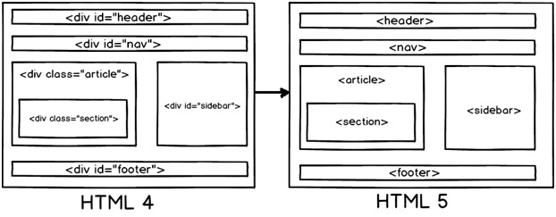

• IE: trident内核 • Firefox：gecko内核 • Safari:webkit内核 • Opera:以前是presto内核，Opera现已改用Google Chrome的Blink内核 • Chrome:Blink(基于webkit，Google与Opera Software共同开发)
!DOCTYPE声明位于文档中的最前面的位置，处于html标签之前。此标签可告知浏览器文档使用哪种 HTML 或 XHTML 规范。
• 改版的时候更方便 只要改css文件。 • 页面加载速度更快、结构化清晰、页面显示简洁。 • 表现与结构相分离。 • 易于优化（seo）搜索引擎更友好，排名更容易靠前。
•alt(alt text):为不能显示图像、窗体或applets的用户代理（UA），alt属性用来指定替换文字。替换文字的语言由lang属性指定。(在IE浏览器下会在没有title时把alt当成 tool tip显示) •title(tool tip):该属性为设置该属性的元素提供建议性的信息。
•strong:粗体强调标签，强调，表示内容的重要性 •em:斜体强调标签，更强烈强调，表示内容的强调点
•渐进增强 progressive enhancement：针对低版本浏览器进行构建页面，保证最基本的功能，然后再针对高级浏览器进行效果、交互等改进和追加功能达到更好的用户体验。
•优雅降级 graceful degradation：一开始就构建完整的功能，然后再针对低版本浏览器进行兼容。
区别：优雅降级是从复杂的现状开始，并试图减少用户体验的供给，而渐进增强则是从一个非常基础的，能够起作用的版本开始，并不断扩充，以适应未来环境的需要。降级（功能衰减）意味着往回看；而渐进增强则意味着朝前看，同时保证其根基处于安全地带。
直观的认识标签 对于搜索引擎的抓取有好处
HTML5没有使用SGML或者XHTML，他是一个全新的东西，因此你不需要参考DTD，对于HTML5，你仅需放置下面的文档类型代码告诉浏览器识别这是HTML5文档
一个典型的WEB页面包含头部，脚部，导航，中心区域，侧边栏。现在如果我们想在在HTML4的HTML区域中呈现这些内容，我们可能要使用DIV标签。但是在HTML5中通过为这些区域创建元素名称使他们更加清晰，也使得你的HTML更加可读.

以下是形成页面结构的HTML5元素的更多细节：
header：代表HTML的头部数据
footer：页面的脚部区域
nav：页面导航元素
article：自包含的内容
section：使用内部article去定义区域或者把分组内容放到区域里
aside：代表页面的侧边栏内容
| SVG | Canvas |
|---|---|
| 这个就好像绘制和记忆，换句话说任何使用SVG绘制的形状都能被记忆和操作，浏览器可以再次显示 | Canvas就像绘制和忘记，一旦绘制完成你不能访问像素和操作它 |
| SVG对于创建图形例如CAD软件是良好的，一旦东西绘制，用户就想去操作它 | Canvas在绘制和忘却的场景例如动画和游戏是良好的 |
| 因为为了之后的操作，需要记录坐标，所以比较缓慢 | 因为没有记住以后事情的意向，所以更快 |
| 我们可以用绘制对象的相关事件处理 | 我们不能使用绘制对象的相关事件处理，因为我们没有他们的参考 |
| 分辨率无关 | 分辨率相关 |